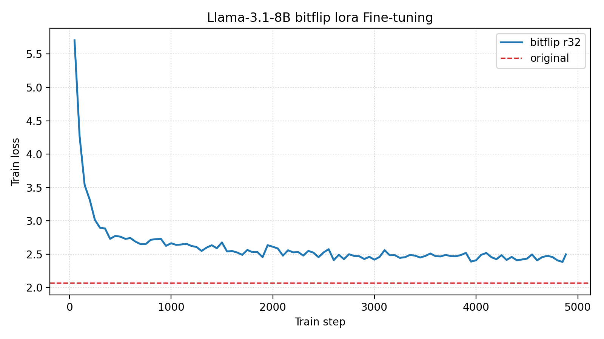

Bitflip-Aware LoRA Fine-Tuning
This tutorial walks through how to run bitflip-aware LoRA fine-tuning on a pretrained LLM (e.g., unsloth/Llama-3.1-8B) using our custom training script.
Overview
Bitflip-aware LoRA fine-tuning combines two ideas:
- Random Bitflip Simulation — During the forward pass, random bit flips are injected into both activations and weights of every linear layer (except
lm_head). This emulates hardware-level bit errors that occur in approximate or unreliable compute substrates. - Low-Rank Adaptation (LoRA) — Instead of fine-tuning all parameters, we attach small low-rank matrices (
lora_A,lora_B) to each linear layer and only train those. The original pretrained weights are frozen.
By fine-tuning with bitflip noise injected during training, the LoRA adapters learn to compensate for hardware-induced errors, making the model more resilient at inference time.
How It Works
Each nn.Linear layer in the model is replaced by a BitFlipLinearLora layer. The forward pass of BitFlipLinearLora performs the following:
where:
Xis the input activation (with optional bitflip noise).Wis the frozen pretrained weight.A(lora_A) andB(lora_B) are the trainable low-rank matrices.scaling = lora_alpha / rcontrols the magnitude of the LoRA update.bitflip(·)applies random bit flips to the sign-exponent and mantissa bits of the FP32 representation, controlled by per-component probabilities.
The model transformation is handled by the transform_llama function, which iterates over all nn.Linear modules in the model (excluding lm_head) and replaces them with BitFlipLinearLora.
Entry Points
| File | Description |
|---|---|
experiments/llm-bitflip/lora_finetune/run_clm_no_trainer.py |
Main training script (HuggingFace Accelerate-based, no Trainer) |
experiments/llm-bitflip/lora_finetune/fine-tune-bitflip-clm.sh |
Shell wrapper that computes training steps and launches the run |
experiments/llm-bitflip/lora_finetune/transform_cfg.toml |
Bitflip + LoRA configuration file |
Step-by-Step Guide
Environment Setup
If you have not set up environments, please follow the guidelines in Environment Setup.
1. Configure the Bitflip & LoRA Transform
The transform configuration is defined in a TOML file. Here is the default configuration at experiments/llm-bitflip/lora_finetune/transform_cfg.toml:
use_lora = true
[fc]
w_p_exp = 1.52587890625e-05
w_p_frac = 1.52587890625e-05
w_zero_out_t = 1.25
x_p_exp = 1.52587890625e-05
x_p_frac = 1.52587890625e-05
x_zero_out_t = 30.0
[lora]
r = 32
lora_alpha = 32
Configuration parameters:
| Section | Parameter | Description |
|---|---|---|
| (top-level) | use_lora |
Enable LoRA adaptation (true/false). When false, all parameters are trained. |
[fc] |
w_p_exp |
Bitflip probability for the sign-exponent bits of the weight. |
[fc] |
w_p_frac |
Bitflip probability for the mantissa bits of the weight. |
[fc] |
w_zero_out_t |
Threshold for zeroing out weight outliers / NaN values. |
[fc] |
x_p_exp |
Bitflip probability for the sign-exponent bits of the activation. |
[fc] |
x_p_frac |
Bitflip probability for the mantissa bits of the activation. |
[fc] |
x_zero_out_t |
Threshold for zeroing out activation outliers / NaN values. |
[lora] |
r |
LoRA rank. |
[lora] |
lora_alpha |
LoRA scaling factor (effective scaling = lora_alpha / r). |
Bitflip probability
The bitflip probability must be a power of 0.5 (e.g., 0.5^16 ≈ 1.526e-05). The kernel automatically snaps to the nearest valid value. Due to limitations of the Philox PRNG, the minimum supported probability is 0.5^24 ≈ 5.96e-08. See the mase-triton docs for more details.
2. Understand the Training Budget
The shell script fine-tune-bitflip-clm.sh automatically calculates the number of training steps based on a budget of 1% of the model's parameter count in tokens. For unsloth/Llama-3.1-8B (8B parameters):
fine-tune tokens = 8,000,000,000 / 100 = 80,000,000 tokens
tokens per step = num_gpus × per_device_batch_size × block_size
max_train_steps = fine-tune tokens / tokens per step
For example, with 8 GPUs, batch size 1, and block size 2048:
3. Launch the Fine-Tuning
The script accepts positional arguments to override defaults:
./fine-tune-bitflip-clm.sh [num_processes] [model_name_or_path] [per_device_train_batch_size] [learning_rate] [weight_decay] [gradient_accumulation_steps] [block_size]
Example: Fine-tune Llama-3.1-8B on 8 GPUs with default settings
This is equivalent to running the underlying command directly:
uv run accelerate launch --num_processes=8 \
run_clm_no_trainer.py \
--model_name_or_path unsloth/Llama-3.1-8B \
--dataset_name Cheng98/fineweb-edu-1.25B \
--per_device_train_batch_size 1 \
--per_device_eval_batch_size 1 \
--learning_rate 1e-5 \
--weight_decay 0.01 \
--num_train_epochs 1 \
--gradient_accumulation_steps 2 \
--lr_scheduler_type linear \
--output_dir ./output/Llama-3.1-8B-bitflip-lora \
--preprocessing_num_workers 32 \
--trust_remote_code \
--with_tracking \
--report_to wandb \
--transform_cfg ./transform_cfg.toml \
--block_size 2048 \
--log_train_loss_steps 50 \
--max_train_steps 4883 \
--wandb_tags unsloth/Llama-3.1-8B,lr1e-5,steps4883
Key arguments:
| Argument | Description |
|---|---|
--model_name_or_path |
HuggingFace model identifier or local path. |
--dataset_name |
Training dataset. We use a 1.25B-token subset of FineWeb-Edu. |
--transform_cfg |
Path to the TOML config for bitflip + LoRA. |
--block_size |
Context length for training samples. |
--log_train_loss_steps |
Log training loss to W&B every N steps. |
--max_train_steps |
Total number of optimizer steps (auto-calculated by the shell script). |
Adjusting GPU count
The first argument to fine-tune-bitflip-clm.sh controls --num_processes for accelerate launch. The script automatically recalculates max_train_steps to maintain the same total token budget regardless of the number of GPUs.
4. Monitor Training
If you have W&B set up (wandb login), training loss and validation perplexity are logged automatically. The training logs to the W&B project Bitflip-CLM-Fine-tune.
- Training loss is logged every 50 steps (configurable via
--log_train_loss_steps). - Validation perplexity is evaluated at the end of each epoch on the first 64 batches of the validation set.
5. Output
After training completes, the fine-tuned model (with LoRA weights merged into the base model) and tokenizer are saved to the output directory:
./output/Llama-3.1-8B-bitflip-lora/
├── config.json
├── model.safetensors
├── tokenizer.json
├── tokenizer_config.json
└── all_results.json # Final perplexity
Results
Training Curves

| Metric | Value |
|---|---|
| Final Training Loss ($\downarrow$) | 2.50 |
| Final Validation Perplexity ($\downarrow$) | 11.01 |
| Total Training Steps | 4883 |
Comparison with Baselines
We evaluate the model under three conditions:
| Bitflipped | Fine-tuned | Bitflip Config | Fine-tune Config | Val PPL ($\downarrow$) |
|---|---|---|---|---|
| ✘ | ✘ | N/A | N/A | 7.91 |
| ✔ | ✘ | w/x_p_exp=1.53e-5, w/x_p_frac=1.53e-5 |
N/A | 1008.95 |
| ✔ | ✔ | w/x_p_exp=1.53e-5, w/x_p_frac=1.53e-5 |
Lora rank=32 | 11.01 |
From the table above, we can see that Lora fine-tuning effectively mitigates the impact of bitflip noise, reducing perplexity from 1008.95 to 11.01 for a 7B model.
We can also safely assume that with more trainable parameters (e.g., a larger LoRA rank, or full fine-tuning) the model would be able to compensate for the noise even better.
Resources
| Resource | Link |
|---|---|
| W&B Logs | https://wandb.ai/cz98/Bitflip-CLM-Fine-tune |
| Training Config | transform_cfg.toml |
Appendix: Evaluation Scripts
The comparison table above was generated with two evaluation-only wrappers that reuse run_clm_no_trainer.py but bypass any optimizer steps. Both scripts share the signature ./script.sh [num_processes] [model_name_or_path] [per_device_batch_size] [block_size] [eval_max_steps] so you can sweep models or batch sizes without editing Python code.
| Script | Purpose | Notes |
|---|---|---|
experiments/llm-bitflip/lora_finetune/eval-bitflip-no-finetune.sh |
Measures perplexity when random bitflips are injected during inference. | This is biflipped (✔) fine-tuned (✘) entry |
experiments/llm-bitflip/lora_finetune/eval-no-biflip-no-finetune.sh |
Serves as the clean baseline (no injected bitflips, no finetuning) so we can isolate the effect of noise. | This is biflip-free (✘) fine-tuned (✘) entry |